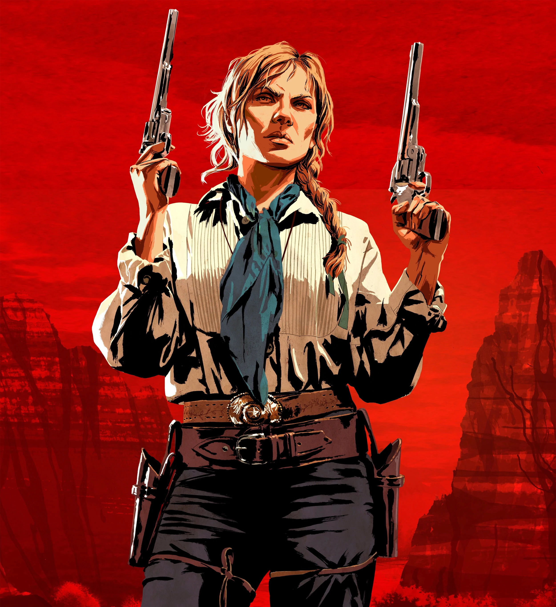
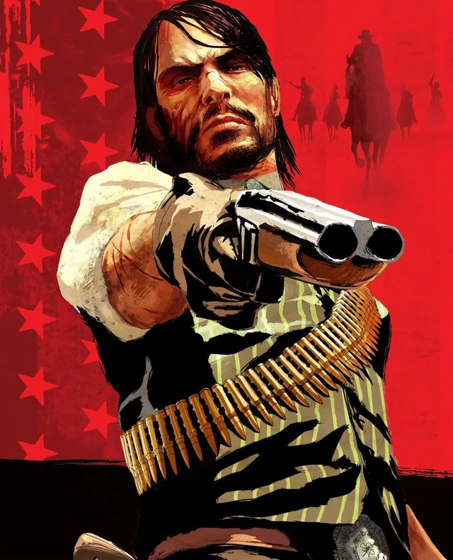

| Character | Info | Facts |
|---|---|---|
 |
Arthur Morgan, the main protagonist of the game Red Dead Redemption (Rdr2) | Born in 1863, to Beatrice and Lyle Morgan in Northern United States. |
|  | A close friend of Arthur's who's not afraid to fight. | A widow who lost her husband to a killing by a gang, the O'drisoll gang. |
|  | John is the main protagonist of the first Red Dead game, his story starts after Arthur Morgan's. |